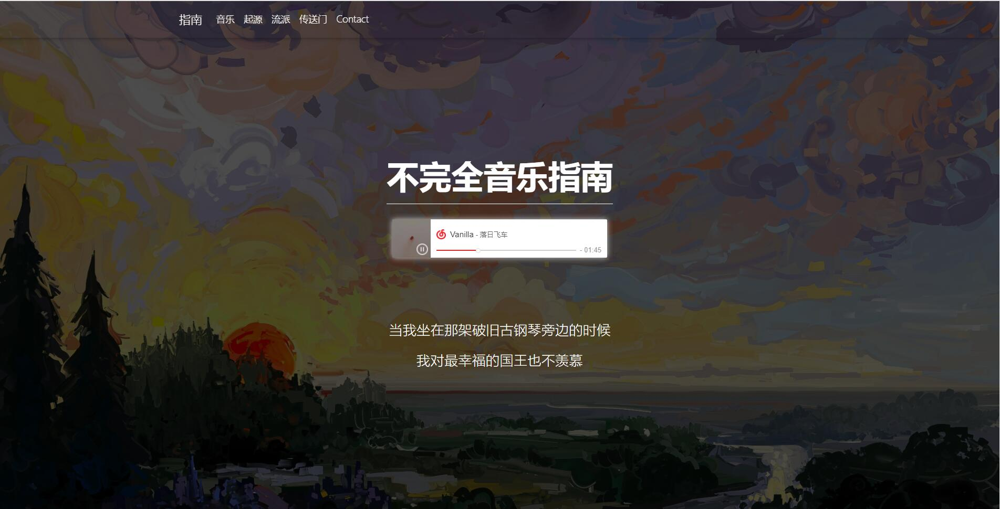

网站简介
本次结业作业完成的是《不完全音乐指南》，主题是关于音乐的介绍以及一些歌手和乐队的推荐，网站分为主页以及四个子网页，主页在传送门板块包含了四个子网页的跳转链接
壹 主页
对音乐的起源和部分流派进行了介绍，在末尾传送门处包含本结业报告和四个子网页的链接
贰 子网页 kendrick lamar
对美国说唱歌手kendrick lamar进行了个人资料介绍以及部分专辑的推荐，页面末尾包含了作者推荐的MV
叁 子网页 落日飞车
对台湾乐队落日飞车进行了个人资料介绍以及部分专辑的推荐，页面末尾包含了作者推荐的MV
肆 子网页 直火帮
对中国说唱团体直火帮进行了个人资料介绍以及部分专辑的推荐，页面末尾包含了作者推荐的MV
伍 子网页 万能青年旅店
对中国摇滚乐队万能青年旅店进行了个人资料介绍以及部分专辑的推荐，页面末尾包含了作者推荐的MV
-
LOVE OR LUST
开发过程及总结
对于本次网站的开发，分为了三个步骤：1.开发主页 2.开发四个子网页 3.开发结业报告网页。而技术上的引用主要还是通过棋歌指导的MDB教程，对三个教程中的页面主体进行了混合使用，构建出了主页的轮廓，在中期想添加背景音乐时，通过查询学习，使用了网易云音乐的iframe插件，将播放器置于主页的首页。而之后的子网页则是在主页的基础上进行了一定的修改，添加了插入视频的步骤，而这个过程也是通过在网上查询学习，新添加了dist文件夹，使用了一个script脚本，最后成功能够插入视频。而网页目前还没有实现只允许一个视频或音乐播放的功能，只能在日后有机会再实现了。本次作业是一次非常有意思的作业，可以充分发挥每个人自己的想法，实现自己想要的功能，对于我来讲收获颇多，而做这样一个网站也是以一种乐在其中的态度来完成的，在这个过程中，不仅收获了知识，还收获了快乐，对web知识学习的兴趣也颇有提升